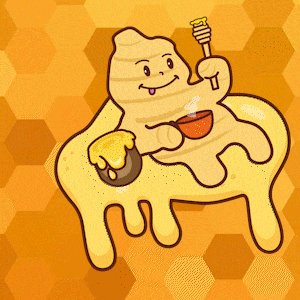

GINGER MED
El jengibre y sus beneficios
El jengibre (O por su nombre cientifico: Zingiber officinale) es una planta aromática cuyo tallo subterráneo (rizoma) es muy utilizado en la cocina y la medicina natural por su sabor picante y refrescante. Se emplea fresco, seco o en polvo para condimentar platillos, preparar infusiones y tratar diversas dolencias
🌿 Beneficios principales
Digestión: Alivia náuseas, mejora la absorción de nutrientes y reduce la inflamación estomacal.
Antiinflamatorio: Gracias a sus gingeroles, ayuda a reducir dolores musculares, articulares y menstruales.
Resfriados: Su efecto térmico ayuda a aliviar síntomas de gripes, tos y congestión nasal.
 |
 |
👩🍳 Usos comunes
Té e infusiones: Hervir rebanadas de la raíz fresca con un poco de limón y miel.
Gastronomía: Rallado o picado en woks, salsas, sopas y adobos, especialmente en la cocina asiática.
Repostería: En polvo para galletas, panes y postres.

⚠️ Precauciones
Interacciones: Se debe consumir con precaución si tomas medicamentos anticoagulantes, para la presión arterial o para la diabetes, ya que el jengibre puede potenciar o alterar sus efectos.
Sensibilidad: En exceso, puede causar acidez o malestar estomacal.

 2026
2026